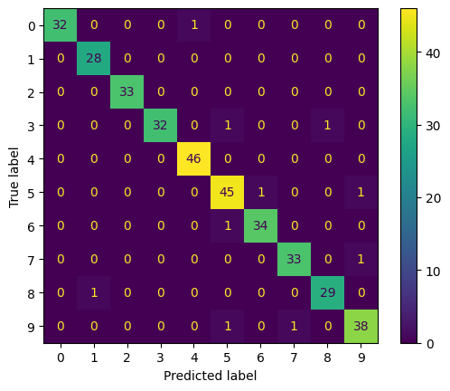

| Metric | Value | |
|---|---|---|
| 0 | Accuracy | 0.972 |
| 1 | Precision | 0.973 |
| 2 | Recall | 0.972 |
| 3 | F1 Score | 0.972 |
Classification Evaluation Report
Executive Summary
This report summarizes the performance of a multiclass digit classification model.
Overall Metrics
Key Findings
The model demonstrates strong overall performance with only a small number of misclassifications.Confusion Matrix

Per-Class Metrics
| precision | recall | f1-score | support | |
|---|---|---|---|---|
| 0 | 1.000 | 0.970 | 0.985 | 33.0 |
| 1 | 0.966 | 1.000 | 0.982 | 28.0 |
| 2 | 1.000 | 1.000 | 1.000 | 33.0 |
| 3 | 1.000 | 0.941 | 0.970 | 34.0 |
| 4 | 0.979 | 1.000 | 0.989 | 46.0 |
| 5 | 0.938 | 0.957 | 0.947 | 47.0 |
| 6 | 0.971 | 0.971 | 0.971 | 35.0 |
| 7 | 0.971 | 0.971 | 0.971 | 34.0 |
| 8 | 0.967 | 0.967 | 0.967 | 30.0 |
| 9 | 0.950 | 0.950 | 0.950 | 40.0 |
Evidently AI Diagnostics
A detailed interactive report was generated at:
outputs/evidently_classification_report.html
Conclusion
This evaluation demonstrates that:
- The model achieves strong overall classification performance.
- Confusion matrix analysis reveals specific class-level mistakes.
- Aggregate metrics alone do not fully capture model behavior.
- Automated reporting combines quantitative metrics and qualitative insights.